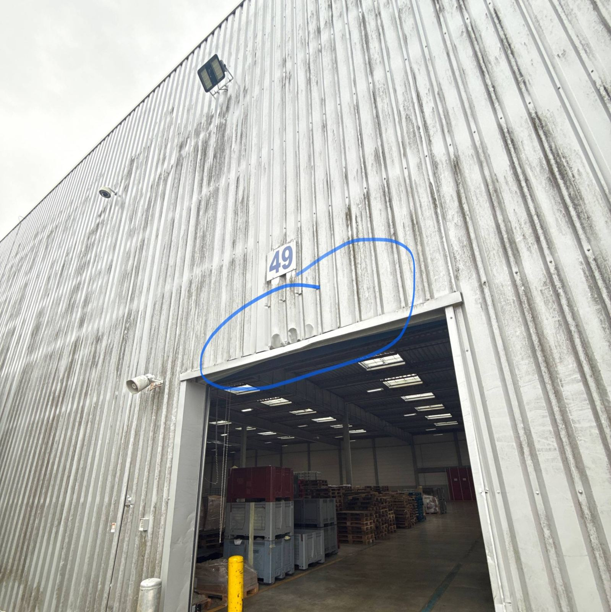
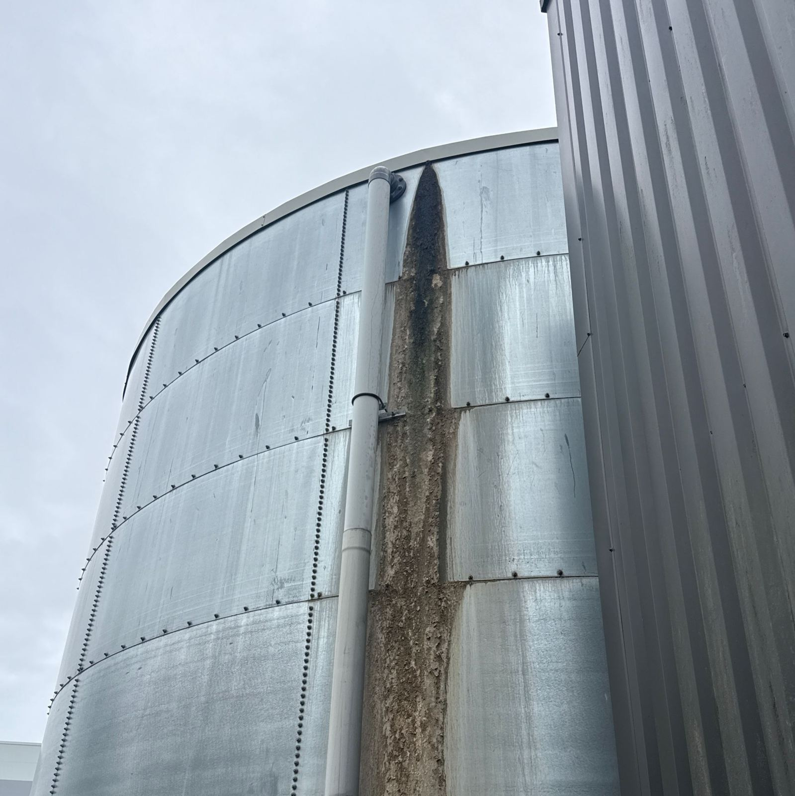
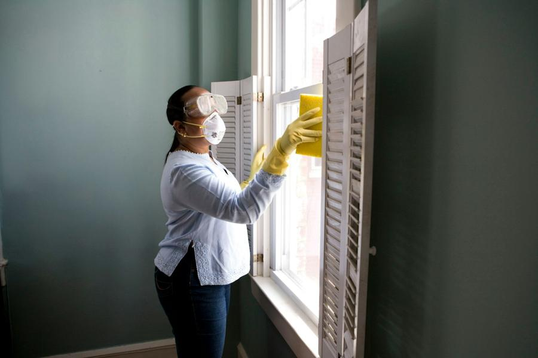

Pour les plateformes logistiques et entrepôts · Toute l’Île-de-France
Intervenir sans jamais gêner l’exploitation.
Sur une plateforme logistique, chaque heure compte et chaque zone a ses règles. Propreté au quotidien, maintenance en site occupé, urgence après un sinistre, défaut d’étanchéité, aménagement d’un bureau ou d’une cafétéria : notre offre part de vos contraintes d’exploitation — flux, co-activité, consignes de sécurité, horaires — pas de notre planning.
Votre réalité, notre point de départ
Nous savons ce que vit un responsable de site.
Responsable d’exploitation, responsable de site, services généraux ou achats : vous avez besoin d’un prestataire qui tient ses engagements sans que vous ayez à courir derrière.
Vos contraintes
- La continuité d’activité avant tout. Les quais, les allées et les locaux doivent rester exploitables pendant les interventions.
- De la co-activité permanente. Caristes, préparateurs, transporteurs : toute intervention extérieure doit composer avec les équipes et les flux en place.
- Des règles de sécurité strictes. Plan de circulation, équipements, consignes d’accès : un intervenant qui ne les respecte pas met le site en risque.
- Des horaires contraints. Les créneaux utiles sont ceux qui ne perturbent pas l’exploitation — et ils ne sont pas toujours confortables pour le prestataire.
- Pas de temps à perdre. Vous avez besoin d’un interlocuteur qui répond, pas d’un standard.
Ce que nous proposons
- Nettoyage et entretien courant des bureaux, locaux sociaux, sanitaires, vestiaires et zones de passage du site.
- Des interventions planifiées avec vous, sur les créneaux qui respectent vos pics d’activité et vos flux.
- Le respect des consignes du site : vos règles de sécurité, d’accès et de circulation sont intégrées avant la première intervention.
- Des reprises tous corps d’état quand un ouvrage l’exige — maçonnerie, plâtrerie, serrurerie — par la même équipe, sans multiplier les prestataires.
- Un interlocuteur direct, qui connaît votre site, répond, et ajuste la prestation quand votre activité évolue.
- Un suivi honnête : ce qui est fait est fait, ce qui pose problème est dit — et traité.
Au-delà de la propreté
Maintenance, urgences, sinistres et aménagements.
Un entrepôt vit, s’use et subit des imprévus. Plutôt que de multiplier les prestataires, une seule équipe prend en charge les travaux de maintenance et les interventions d’urgence, en site occupé, sans interrompre vos flux.
Urgences & sinistres
- Intervention d’urgence après sinistre : mise en sécurité, remise en état, et intervention documentée (constats, photos) pour appuyer votre demande d’assurance.
- Défauts d’étanchéité : recherche de l’origine des infiltrations et reprise de l’étanchéité, toiture terrasse comprise (entretien et réparation), pour protéger les marchandises et l’exploitation.
- Fixations et équipements : reprise de fixations de spots et de luminaires, petits travaux d’électricité du quotidien.
- Mobilisation en délai court : un imprévu signalé le matin ne doit pas bloquer le site toute la semaine.
Aménagements & installations
- Aménagement de bureaux : cloisons, doublages, reprises de plâtrerie et finitions pour faire évoluer vos espaces de travail.
- Aménagement de cafétéria et de locaux sociaux, pour des équipes qui travaillent dans de bonnes conditions.
- Pose de signalétique et marquage au sol : installation et remplacement de la signalétique, marquage des circulations piétonnes et engins pour sécuriser et organiser le site.
- Menuiserie intérieure : portes, cloisons et agencements pour faire évoluer vos espaces.
- Installations et petits travaux tous corps d’état : maçonnerie, plâtrerie, serrurerie, carottage — la même équipe, du devis à la réception.



Notre méthode
Votre site d’abord, notre planning ensuite.
Nous visitons votre site et nous vous écoutons. Les zones, les flux, les horaires, les consignes : le besoin réel se comprend sur place.
Nous définissons ensemble un périmètre clair. Ce qui est inclus, ce qui ne l’est pas, à quelle fréquence, sur quels créneaux. Pas de zone grise.
Nous intégrons vos règles avant d’intervenir. Sécurité, accès, circulation, présence des équipes : nos intervenants arrivent préparés.
Nous faisons le travail, et nous le suivons. Un interlocuteur direct, des points réguliers, des ajustements quand votre activité change.
Quand il y a un imprévu, nous le disons. Un problème signalé tôt et traité franchement vaut mieux qu’une promesse intenable.
Questions fréquentes
Plateformes logistiques : vos questions, nos réponses.
Intervenez-vous en urgence sur un entrepôt, par exemple après un sinistre ?
Oui. En cas de sinistre sur votre plateforme logistique, nous nous mobilisons en délai court pour mettre en sécurité et remettre en état, et nous documentons l’intervention (constats, photos) pour appuyer votre demande auprès de votre assurance.
Pouvez-vous traiter un défaut d’étanchéité ou une infiltration ?
Oui. Nous recherchons l’origine du défaut d’étanchéité et réalisons la reprise, y compris en toiture, afin de protéger les marchandises et d’éviter que le problème ne revienne.
Faites-vous les petits travaux du quotidien : fixation de spots, luminaires, signalétique ?
Oui. Reprise de fixations de spots et de luminaires, petits travaux d’électricité du quotidien, pose et remplacement de signalétique : une seule équipe traite ces demandes, sans multiplier les prestataires.
Pouvez-vous aménager des bureaux ou une cafétéria dans notre entrepôt ?
Oui. Nous réalisons l’aménagement de bureaux et de cafétérias en site occupé : cloisons, doublages, plâtrerie, finitions — planifiés sur les créneaux qui respectent vos flux.
Comment intervenez-vous sans perturber l’exploitation ?
Nous visitons d’abord votre site pour comprendre les zones, les flux et les consignes de sécurité. Les interventions sont ensuite planifiées avec vous, sur des créneaux qui évitent vos pics d’activité, et nos intervenants arrivent préparés aux règles du site.
Dans quelles zones intervenez-vous ?
Partout en Île-de-France : Paris (75), Seine-et-Marne (77), Yvelines (78), Essonne (91), Hauts-de-Seine (92), Seine-Saint-Denis (93), Val-de-Marne (94) et Val-d’Oise (95). Notre bureau est à Courtry (77).
Et si on commençait par une visite de votre site ?
Pas de devis à distance : nous venons voir vos locaux et vos contraintes, puis nous chiffrons un périmètre précis.
Contact
Parlons de votre site.
Décrivez-nous votre plateforme, ses horaires et ses contraintes : nous revenons vers vous pour en parler concrètement.
- Téléphone06 62 06 93 22
- E-mailmike.ofentretiens@gmail.com
- BureauCourtry (Seine-et-Marne) — interventions dans toute l’Île-de-France
- Instagram @ofentretiens — suivez nos interventions